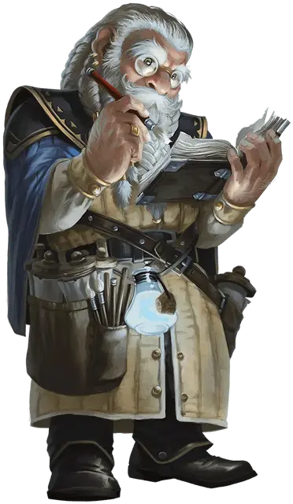

Старший мудрец
Master Sage
Средний Гуманоид (Любая раса)

Класс Доспеха 10 (13 с доспехом мага)
Хиты 54 (12к8)
Скорость 30 футов
| мод | спас | ||
|---|---|---|---|
| СИЛ | 8 | −1 | −1 |
| ЛОВ | 10 | +0 | +0 |
| ТЕЛ | 10 | +0 | +0 |
| мод | спас | ||
|---|---|---|---|
| ИНТ | 20 | +5 | +5 |
| МДР | 18 | +4 | +4 |
| ХАР | 11 | +0 | +0 |
Навыки История +11, Магия +11, Медицина +10, Природа +11, Проницательность +7, Расследование +11, Религия +11
Чувства пассивное Восприятие 14
Языки Общий, Любой 5
Опасность 5 (1800 опыта)
Бонус мастерства +3
Действия
Электрошок (заговор). Рукопашная атака заклинанием: +8 к попаданию (с преимуществом, если цель носит доспехи из металла), досягаемость 5 фт., одно существо. Попадание: 13 (3к8) урона электричеством, и цель не может использовать реакции до начала своего следующего хода.
Огненный шар (заклинание 3-го уровня; 3/день). Старший мудрец создаёт огненный взрыв в точке, которую он может видеть в пределах 150 футов от себя. Все существа в пределах сферы с радиусом 20 фт. с центром в этой точке должны совершить спасбросок Ловкости Сл 14, получая 28 (8к6) урона огнём в случае провала и половину этого урона в случае успеха. Огонь огибает углы и воспламеняет горючие предметы, которые никто не несет и не носит.
Использование заклинаний. Старший мудрец может наложить одно из следующих заклинаний, используя Интеллект в качестве базовой характеристики (Сл спасброска от заклинания 14, +6 к атакам заклинаниями):
• Неограниченно: свет [light], волшебная рука [mage hand], починка [mending], фокусы [prestidigitation]
• 3/день каждое: понимание языков [comprehend languages], обнаружение магии [detect magic], рассеивание магии [dispel magic], опознание [identify], левитация [levitate], поиск предмета [locate object], Тензеров парящий диск [Tenser’s Floating Disk], невидимый слуга [unseen servant]
• 1/день каждое: изгнание [banishment], связь с иным миром [contact other plane], Дромиджево появление [Drawmij’s instant summons], знание легенд [legend lore], поиск существа [locate creature], планарные узы [planar binding], превращение [polymorph], защита от зла и добра [protection from evil and good], наблюдение [scrying], послание [sending], истинное зрение [true seeing]
Реакции
Щит (Заклинание 1-го уровня; 3/день). Когда по старшему мудрецу попадают атакой или становится целью заклинания волшебная стрела, его окружает защитный невидимый барьер магической силы. До начала своего следующего хода старший мудрец имеет бонус +5 к КД, в том числе против атаки вызвавшей его активацию, а так же не получает урона от заклинания волшебная стрела.